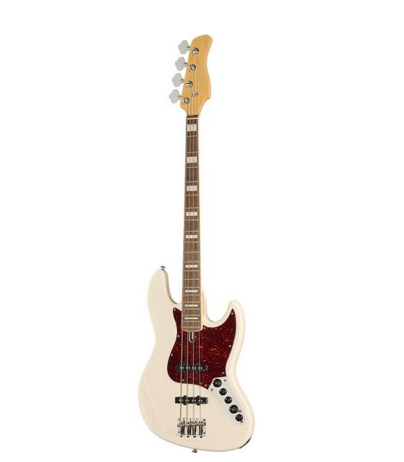

Marcus Miller V7

Electric Bass
Body: Alder
One-piece neck: Maple
Fretboard: Ebony
Neck profile: C
Scale: 34" (long scale)
Nut width: 38 mm
Fretboard radius: 241 mm
Frets: 20 Medium small
Nut: Bone
Pickups: 2 Marcus Super-J Revolution single coils
Electronics: Marcus Heritage-3 with frequency control
Controls: Volume/Tone (dual pot) - Pickup Blender - Treble - Middle/Middle Frequency (dual pot) - Bass
Active/Passive mini switch
Includes 2x 9 V batteries
Bridge: Marcus Miller Modern S with 20 mm string spacing
Hardware: Chrome
Colour: Antique White
Includes a chrome pickup cover
Made by Sire